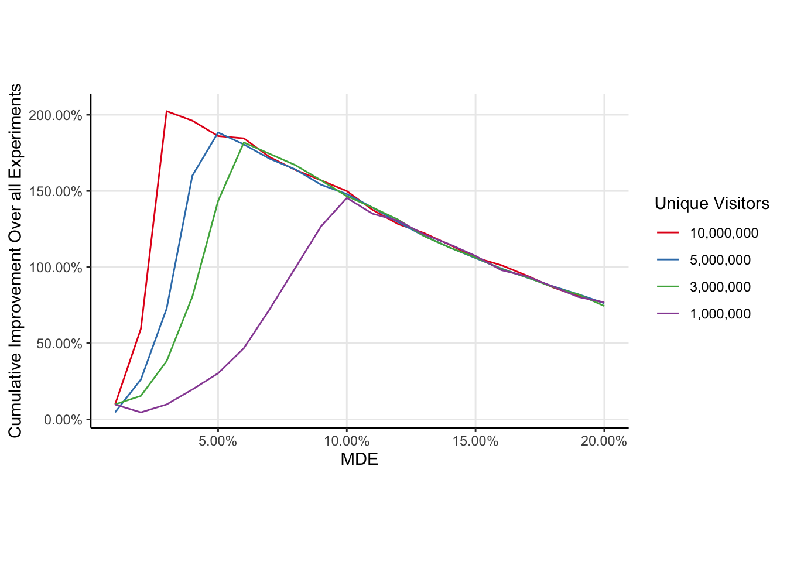
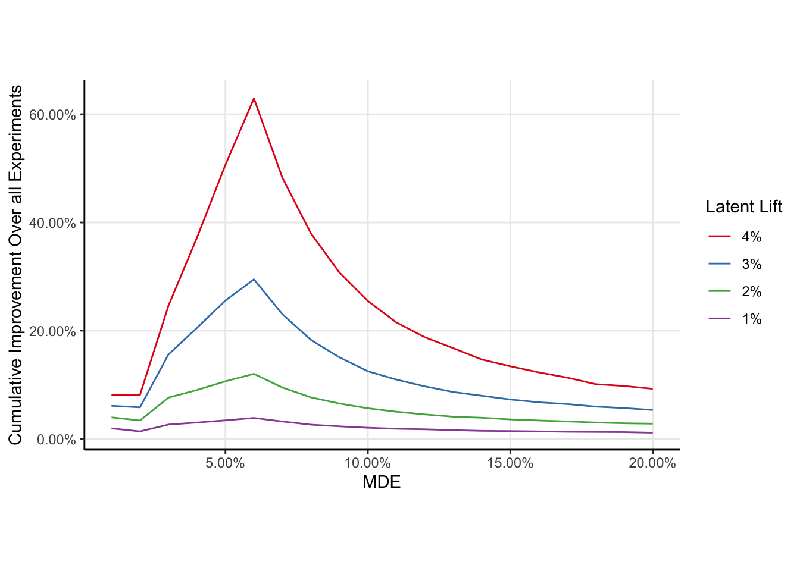

Planning experiments means deciding how long to run the experiment (by doing a sample size calculation). A big factor in this decision is agreeing on a minimal detectable effect or MDE. Smaller MDEs mean longer experiments and hence fewer of them in a given window of time. Larger MDEs mean shorter experiments, but they also mean there is a chance we could fail to reject smaller effects 1. Clearly, there is a sweet spot for the MDE; not so large that we are passing over interventions which would improve a given metric, but not so small that we are wasting our time collecting samples.
This blog post is intended to demonstrate how data scientists can empirically estimate the “optimal” MDE for experimenting teams. Here, “optimal” refers to the MDE which optimizes the long run cumulative improvement to the metric (i.e. the MDE which is estimated to improve the metric the most in a given window of time) under some mild and some strong assumptions. I begin by assuming teams have a model of likely effect sizes for their interventions vis a vis a Bayesian model like I have done in my past post Forecasting Experimental Lift Using Hierarchical Bayesian Modelling.
I begin with an illustration of the larger idea, at a level I hope would be appropriate for a product manager. Then, I formally describe the procedure and implement it in R, making some illustrative assumptions about a hypothetical team running experiments. Lastly, I demonstrate how various assumptions can effect the estimate of the optimal MDE and estimate a linear model for the optimal MDE as a function of the assumptions.
Although imperfect, I believe this approach offers a superior approach to determining the MDE for experimenting teams, and also has the benefit of being re-estimable experiment over experiment thanks to the Bayesian modelling driving the approach.
Big Idea
Let’s consider how many experiments a team can run in a year. Teams usually have some upper limit for the number of experiments because they need time to tend to their other responsibilities. Let’s assume a team can run 24 experiments in a year (~2 experiments a month on average). While the team has a maximum number of experiments they can run, the number of experiments they actually run will depend on how the experiments are planned. For example, if the team has on average 10,000,000 unique visitors each year, and each experiment needs 1, 500, 000 users, then the team can run 6 experiments (you can’t run half an experiment so you have to round down to the nearest number). So the number of experiments that can be run for this team is the smaller of the ratio of unique visitors per year to total sample size per experiment and 24. The key insight here is that because the MDE determines the sample size per experiment (again, larger/smaller MDEs mean smaller/larger sample sizes), then the MDE implicitly determines the number of experiments we can.
Each change to the product has some true effect that is unknown to us. In fact, the whole reason we run an experiment is to estimate that effect. Because the MDE determines the sample size per experiment, it also determines the probability we detect the effect. Increase the MDE, and the probability we detect a given effect decreases (because the sample size for the experiment decreases). Conversely, decreasing the MDE increases the probability we detect an effect.
We need to choose an MDE so that we can run lots of experiments and have a good chance of detecting positive effects in those experiments. The problem is that we don’t know what kinds of effects our experiments are going to have, which is why we use an MDE. The MDE basically is a stand in for what we think the effect of the change is going to be at its smallest. If the effect of the change is bigger than the MDE, then we have a really good chance to detect the effect.
However, we actually can estimate what kinds of effects our changes will produce. It isn’t worth getting into, but we can estimate a distribution of likely effect sizes, meaning we can reasonably guess what kinds of effects we are going to see in future experiments. This means that we can use this distribution of plausible future effects to simulate future experiments. These simulations can then be used to determine the MDE which strikes the balance we need. A good way to determine which MDE is best is to consider the “cumulative impact” on the metric. Think of it this way; if we run lots of experiments and they all have a reasonable chance of detecting effects then the metric we’re seeking to improve is going to change in a big way. So our goal is to find the MDE which results in the largest improvement to our metric over a given window of time in which we can experiment. This MDE which results in the largest improvement is called the “optimal MDE”.
Let’s formalize the optimization problem using some math.
Mathematical Details
Let \(N_{uuid}\) be the number of unique subjects available for experimentation in a given time frame, let \(\delta \in \mathbb{R}_+\) be an arbitrary MDE, and let \(K\) be the maximum number of experiments for a given team. Let \(n_{ss}: \mathbb{R}_+ \to \mathbb{N}\) be a function which maps MDEs to sample sizes for experiments. The number of experiments which can be run in a given time frame is \(n_{\exp}(\delta) = \min\left(K, \lfloor\frac{N_{uuid}}{n_{ss}(\delta)} \rfloor \right)\). Here, I have included an explicit dependency of \(n_{\exp}\) on \(\delta\) to remind us that the MDE implicitly determines the number of experiments. I’ve made the assumption that experiments can be run back to back.
Let \(\theta_k\) be a latent effect from an intervention, and let \(\psi(\theta_k; \delta)\) be the statistical power to detect an effect of \(\theta\) when the experiment is designed with an MDE of \(\delta\). I assume that: a) All interventions are independent of one another, and the effect of one intervention is not changed by the implementation of another, b) effects of interventions are additive (on the appropriate scale), and c) effects persist through time (there is now decay of an effect once implemented).
The objective function we seek to optimize is the expected cumulative improvement to the metric we are opting to experiment on. We get \(n_{\exp}\) draws from our population distribution of effects (because we are running that many experiments), and the expected cumulative improvement is the sum of the products of the effects and the probability we detect the effect
\[ C(\delta) = \sum_{k=1}^{n_{\exp}(\delta)} \theta_k \psi(\theta_k; \delta) \] Note here that the MDE \(\delta\) determines both the number of experiments run (\(n_{\exp}\)) and the probability those experiments detect an effect. The optimal MDE is then
\[ \delta_{\mbox{opt}} = \underset{\delta \in \mathbb{R}_+}{\arg\max} \Big\{ C(\delta) \Big \}\] While the \(\theta\) are latent, this quantity can still be optimized by using draws from a Bayesian model for experimental effects. See this previous post of mine for an example of what I mean.
In the next section, I demonstrate how to estimate \(\delta_{\mbox{opt}}\) using simulation. To fill in some missing information (e.g. the maximum number of experiments run by the team), I explicitly write out some assumptions.
Additional Assumptions
Imagine a team who runs experiments. I make the following assumptions about the team:
The team’s entire job is running experiments. Due to resourcing constraints, they can only run a finite number experiments per year. I assume the team can run 24 experiments a year (or 2 per month on average). The team can run experiments back to back.
The team works in a frequentist framework, and they always run 2 tailed tests because there is a chance they could hurt the product, and they would want to know that.
The main causal contrast is relative risk. In industry, we call this the “lift”.
The outcome is a binary outcome, and the baseline rate is 8%.
10,000,000 unique visitors to your website per year.
The team generates lift fairly reliably and these lifts sustain through time. There is no decay of the effect, no interaction between experiments, nor is there any seasonality. These are blatantly false, but they simplify enough for us to get traction.
The population level lift distribution is log normal, with parameters \(\mu=\log(1.01)\) and \(\sigma=0.1\) on the log scale. This means the team increases the metric by approximately 1% on average.
The team is really only interested in positive effects (lift > 1) so they will not implement anything with lift < 1, and if the null fails to be rejected they will stick with the status quo.
The same MDE is used to plan all experiments.
Under these assumptions, a procedure can be devised to optimize the cumulative improvement to the metric of interest.
Results from a Simulation Experiment
Shown in the code cell below is simulation of the process for finding the optimal MDE under the assumptions listed above. Rather than simulate every experiment (e.g. by drawing random numbers and performing a statistical test), we can draw a binomial random variable with probability of success equal to the statistical power of detecting the latent lift with the indicated MDE and hence sample size.
The optimal lift is somewhere between 5% and 6%. Explicit optimization methods could be used find the optima, but I think for the purposes of experimentation you just want to be in the right ballpark, so a plot is more than enough.
Code
one_sided_power =function(real_lift, n_per_group){# Only interested in the case when the estimated lift is# Greater than one, which corresponds to a one sided test.# However, you always run 2 tailed tests, so the significance level# is half of what is typically is.pwr.2p.test(h =ES.h(real_lift*baseline, baseline), n = n_per_group,alternative ='greater',sig.level =0.025 )$power}f =function(mde, baseline=0.08, n_uuids=2500000, latent_lift =1.01){# Draw lifts for experiments from this distribution lift_dist <-\(n) rlnorm(n, log(latent_lift), 0.1)# Given the MDE, here is how many users you need per group in each experiment. n_per_group =ceiling(pwr.2p.test(h =ES.h(mde*baseline, baseline), power =0.8)$n)# Here is how many experiments you could run per year# Why the factor of 2? Because the computation above is the szie of each group. n_experiments_per_year <-pmin(24, floor(n_uuids/(2*n_per_group)))# Here is a grid of experiments. Simulate # Running these experiments 1000 times# each experiment has n_per_group users in each group simulations <-crossing(sim =1:4000, experiment =1:n_experiments_per_year,n_per_group = n_per_group ) simulations %>%mutate(# draw a real lift for each experiment from your lift distributionreal_lift =lift_dist(n()),# Compute the power to detect that lift given the sample size you haveactual_power =map2_dbl(real_lift, n_per_group, one_sided_power),# Simulate detecting the liftdetect =as.logical(rbinom(n(), 1, actual_power)),# Did you implement the result or not?# If you didn't, this is equivalent to a lift of 1# and won't change the product.result =if_else(detect, real_lift, 1), ) %>%group_by(sim) %>%#finally, take the product, grouping among simulations.summarise(lift =prod(result)) }mdes <-tibble(mde =seq(1.01, 1.2, 0.01)) %>%mutate(mde_id =as.character(seq_along(mde)))results =map_dfr(mdes$mde, f, .id ='mde_id') %>%left_join(mdes)results %>%ggplot(aes(mde, lift)) +stat_summary(fun.data = \(x) mean_se(x, 2)) +scale_x_continuous(labels = \(x) scales::percent(x-1, 0.01)) +scale_y_continuous(labels = \(x) scales::percent(x-1, 0.01)) +labs(x='MDE', y='Cumulative Improvement Over all Experiments',title ='Swing for the Fences',subtitle ='The optimal MDE is not the expected lift the team generates')
How Do The Various Parts of The Problem Change The Objective Function?
Changing the baseline of the metric moves the optima, with larger MDEs being considered optimal for smaller baselines.
As the number of unique visitors to the website increases, the optimal MDE decreases, but only slightly.

As the expectation of the latent lift increases, the optima does not move but the expected cumulative improvement to the metric increases. This is unsurprising.

Footnotes
The “M” in MDE is really misleading. A better term would be Smallest Effect Size of Interest, because we can detect smaller effects than the MDE, albeit with lower probability.↩︎